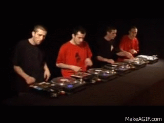
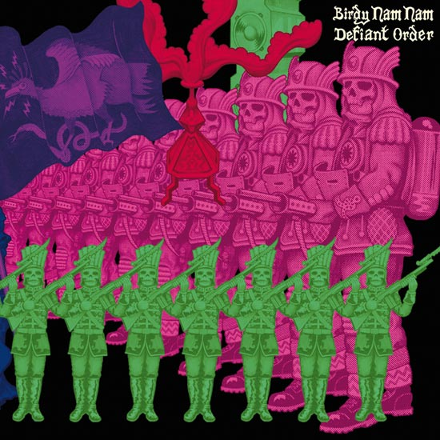
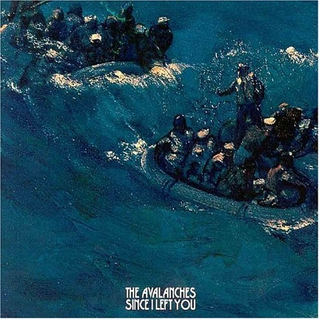
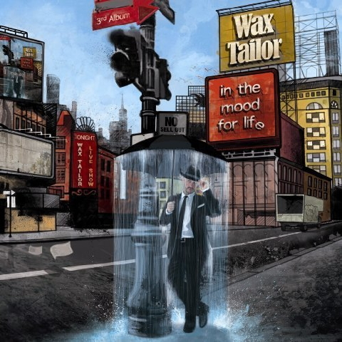

|
|
|
Understanding
Electronic music is music that employs electronic musical instruments and electronic music technology in its production, an electronic musician being a musician who composes and/or performs such music. In general a distinction can be made between sound produced using electromechanical means and that produced using electronic technology. Examples of electromechanical sound producing devices include the telharmonium, Hammond organ, and the electric guitar. Purely electronic sound production can be achieved using devices such as the theremin, sound synthesizer, and computer. Released in 1970 by Moog Music the Mini-Moog was among the first widely available, portable and relatively affordable synthesizers. It became once the most widely used synthesizer at that time in both popular and electronic art music. Patrick Gleeson, playing live with Herbie Hancock in the beginning of the 1970s, pioneered the use of synthesizers in a touring context, where they were subject to stresses the early machines were not designed for. The first electronic devices for performing music were developed at the end of the 19th century, and shortly afterward Italian Futurists explored sounds that had previously not been considered musical. During the 1920s and 1930s, electronic instruments were introduced and the first compositions for electronic instruments were composed. By the 1940s, magnetic audio tape allowed musicians to tape sound and then modify them by changing the tape speed or direction, leading to the development of electroacoustic tape music in the 1940s, in Egypt and France. |
Origins Lee de Forest's 1906 invention, the triode audion tube, later had a profound effect on electronic music. It was the first thermionic valve, or vacuum tube, and led to circuits that could create and amplify audio signals, broadcast radio waves, compute values, and perform many other functions. Before electronic music, there was a growing desire for composers to use emerging technologies for musical purposes. Several instruments were created that employed electromechanical designs and they paved the way for the later emergence of electronic instruments. An electromechanical instrument called the Telharmonium (sometimes Teleharmonium or Dynamophone) was developed by Thaddeus Cahill in the years 1898 to 1912. However, simple inconvenience hindered the adoption of the Telharmonium, due to its immense size. One early electronic instrument often mentioned may be the theremin, invented by Professor Leon Theremin circa 1919-1920. Other early electronic instruments include the Audion Piano invented in 1915 by Lee de Forest who was inventor of triode audion as mentioned above, the Croix Sonore, invented in 1926 by Nikolai Obukhov, and the ondes Martenot, which was most famously used.  |
|
Birdy Nam Nam  |
Coups2Cross |
The Avalanches  |
|
Justice |
Dirtyphonics |
Wax Tailor  |